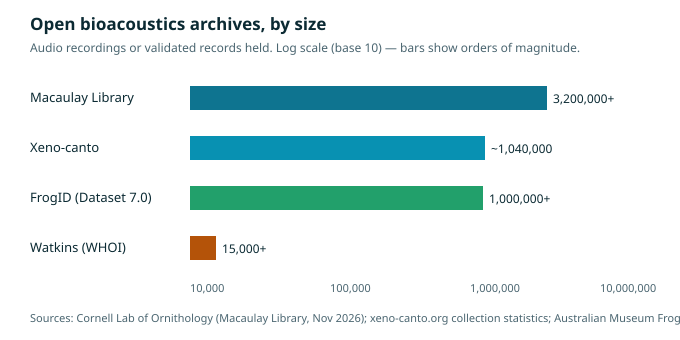

An honest status report from WAVE / bioacoustics.cloud

Illustration: frogs calling across a night wetland, their voices rippling across the water. Generated illustration, not a photograph.
On a warm night after rain, a wetland can become one of the loudest places on land. Hundreds of frogs, sometimes of a dozen species at once, call from the water's edge, from reeds and lily pads, from burrows and tree hollows — a layered chorus of trills, croaks, bleats, clicks, and banjo-like twangs that can carry for hundreds of metres. To a human listener it is a wall of sound. To a trained ear, or a trained algorithm, it is a census: a roll-call of exactly which species are present, how many are calling, and whether they are breeding — all gathered without touching, trapping, or even seeing a single frog.
That is a remarkable thing, because frogs are among the hardest animals to survey by sight. They are small, camouflaged, nocturnal, and often silent by day. Many species are active for only a few weeks a year, during breeding, and invisible the rest of the time. Sound is the practical answer to that problem, and it has been the answer for a long time: frog call surveys, in which a person stands at a pond at night and writes down what they hear, are one of the oldest techniques in amphibian fieldwork. What has changed is the scale. Microphones that listen all night, smartphone apps that put a recorder in every pocket, and expert-validated datasets that now run to more than a million records have turned a night-time listening technique into one of the largest biodiversity monitoring efforts ever attempted — and, arguably, one of the most important, because the animals being counted are the most threatened vertebrates on the planet.
This article is about that effort: why frogs matter, why their calls are such good data, what Australia's FrogID project has actually achieved, and where the limits of listening lie. It is also about what listening cannot do. A recording can tell you a frog was present and calling. It cannot tell you whether that frog will survive the year, whether its pond will still be there next summer, or whether the fungus killing frogs on five continents has reached its valley. Sound is the best early-warning system we have for amphibians. It is not a rescue.
What is true, and what is not yet true
The framing first, as always. The live species predictor on bioacoustics.cloud is BirdNET — a model built by Cornell and Chemnitz that identifies birds first, covering 11,000+ species. The production model v2.4 (March 2025) covers 6,522 bird species; the 11,000+ figure is BirdNET's current platform figure. It does not identify frogs. The broader GPU model (Perch / NatureLM) that the site's roadmap mentions is not connected. Nothing in this article claims that WAVE currently offers a frog-identification service, and nothing here should be read as a product announcement. The frog identification work described below is done by other organisations — above all the Australian Museum's FrogID project, whose experts listen to and validate every recording submitted — and by the researchers who build frog classifiers from open data.
What WAVE does today is analysis and structured access to sound and to the public archives that hold it. What this article does is explain, accurately, how frog bioacoustics works and what the evidence shows. The distinction matters because frogs are in crisis, and a crisis is exactly when overclaiming does the most harm: a public told that an app has "solved" frog monitoring may stop worrying about the wetlands, the disease, and the climate pressures that no app can fix.
The most threatened vertebrates on Earth
Start with the scale of the problem, because it is what makes everything else in this article urgent rather than merely interesting. Amphibians — frogs, toads, and salamanders — are the most threatened vertebrate class on Earth. The second Global Amphibian Assessment, published in Nature in 2023 by Luedtke and colleagues, evaluated 8,011 species for the IUCN Red List of Threatened Species and found that 40.7% of species are globally threatened — in the Red List categories Critically Endangered, Endangered, and Vulnerable. That is 2,873 species. The updated Red List Index shows the status of amphibians is deteriorating globally, particularly for salamanders and in the Neotropics.
The drivers have shifted over time. Disease and habitat loss drove 91% of status deteriorations between 1980 and 2004. Since 2004, climate change has become a fast-growing threat, driving 39% of status deteriorations, followed by habitat loss at 37%. The disease in question is chytridiomycosis, caused by the fungus Batrachochytrium dendrobatidis — known as Bd — which infects the keratin in amphibians' skin. Because frogs breathe and drink partly through their skin, a skin disease can be lethal, and Bd has been described as the most deadly disease afflicting vertebrates in recorded history. Since it spread globally from the 1970s onwards, it has driven the decline or disappearance of hundreds of amphibian populations and species. Some groups have been devastated: the neotropical harlequin toads of the genus Atelopus, for example, have more than 80% of their species in threat categories, with the main drivers being habitat destruction, chytrid fungus, and climate change.
Australia, the focus of this article, illustrates the pattern. The continent is home to around 259 native frog species, many found nowhere else in the world. Frogs there face the same pressures as elsewhere — habitat destruction and fragmentation, altered waterways, pollution, drought, fire, climate change, invasive species, and disease — and chytrid fungus has caused severe declines and extinctions in Australia as well as around the world. The introduced cane toad, a large toxic toad that has spread across northern and eastern Australia, adds a further pressure, poisoning predators that try to eat it and competing with native frogs.
Why frogs are so vulnerable is, in a sense, the same reason they are such good indicators. Frogs live two lives: most species begin as aquatic tadpoles and metamorphose into terrestrial or semi-aquatic adults, so they depend on both clean water and intact land habitat. Their skin is permeable, exchanging water and gases directly with the environment, which makes them sensitive to changes in water quality, temperature, rainfall, and chemical pollution that other animals can tolerate. A frog is, in effect, a living sensor for the health of a wetland and its catchment. When frog populations decline or disappear, it can be a warning that the ecosystems supporting them are under pressure — a warning that arrives before the damage is visible in larger, hardier animals. That is why the phrase "canary in the coal mine" is used so often about frogs, and why it is, for once, more or less accurate.
Why frogs are made to be heard
If frogs are hard to see, they are — by evolutionary design — easy to hear. The reason is reproduction. In most frog species, males call to attract females of their own species to breed, and they call from or near water, where the eggs will be laid. The call is therefore a public advertisement, broadcast as loudly as the animal can manage, night after night through the breeding season. And because a female must find a male of her own species among a chorus that may contain a dozen others, the calls have evolved to be distinctive: each species has its own call structure — its own pulse rate, frequency, duration, and pattern — as recognisable, to a trained ear, as a voice in a crowd.
That species-specificity is what makes frog calls such good data. A recording of a chorus is not a vague impression of "frogs present." It is, in principle, a species list, with timestamps. A trained listener can hear a striped marsh frog's "tok" and a green tree frog's "crawk-crawk" in the same recording and log both. A recording made on a given night, at a given place, by a given person, is a dated, located, reviewable observation — the same kind of record as a photograph of a bird, but for an animal that would almost never be photographed.
There are complications, and the honest account includes them. Calls vary with temperature: a cold frog calls more slowly than a warm one, so the same species can sound different on different nights. Some species call rarely, or only under specific conditions — after rain, at a particular temperature, in a narrow seasonal window. Females are generally silent, so a chorus records males, not the whole population. Some species barely call at all. And in a dense chorus, calls overlap, masking each other, so that the quietest or rarest species can be drowned out by the loudest. All of these are reasons why frog acoustic monitoring needs care — calibration, repeated visits, expert validation — and why a single recording is a data point, not a verdict.
But the fundamental advantage remains: sound lets you survey animals you cannot see, at night, across large areas, without disturbing them. A person with a smartphone can make a scientifically useful frog observation in twenty seconds, standing at the edge of a pond. That fact is the foundation of the largest frog monitoring project in the world.
FrogID: a million records, one call at a time
FrogID was launched by the Australian Museum in 2017 to help improve understanding of where Australia's frogs are found and how their populations are changing. It is Australia's first national frog identification project, and it works on a model of radical simplicity: a free smartphone app lets anyone record frog calls whenever they hear them. The app captures accurate date, time, and location information automatically. The recording is then listened to and identified by one or more frog call experts at the Australian Museum, and the user is notified of what species of frog they recorded.
That expert validation is the project's defining feature, and the one that separates it from an identification app. Every FrogID submission is listened to by one or more experts. Depending on the species and the time of year, confirmations can take anywhere from a few days to a few weeks — and since October 2025, FrogID has received thousands of submissions each week, so the validation queue is a real constraint. The project has also introduced FrogID AI, a machine-learning feature that provides faster, provisional species suggestions from recordings, using lightweight models trained on FrogID's own database of frog call recordings. The project's own FAQ is explicit about the boundary: FrogID AI does not replace the expert validation process, and all recordings continue to be reviewed by experts before being added to the official scientific dataset. That is a model of how to use AI honestly — as a triage and suggestion tool, with humans keeping the authority — and it is worth stating plainly, because many wildlife apps do the opposite.
The scale of what has been built is extraordinary. The Australian Museum has released FrogID Dataset 7.0, bringing together seven years of expert-validated observations. The dataset contains more than one million records of 228 frog species — including the introduced cane toad — representing approximately 88 per cent of Australia's known frog species. A related research paper, using a checkpoint from March 2025, reports more than 1.3 million frog occurrence records from over 800,000 georeferenced audio submissions, gathered by more than 100,000 participants in under eight years. The two figures differ because they are snapshots at different times, from different cuts of the data; both describe the same phenomenon, which is a dataset of a size that traditional frog surveys could never have produced.
The dataset is not only large. It is used. FrogID data are submitted as expert-verified records to the Atlas of Living Australia and to state wildlife atlases, where they inform research and conservation. The data have advanced understanding of the impacts of land-use modification and extreme weather events, have been used to track the spread of the introduced cane toad, and have helped discover 13 species new to science — frogs whose calls, recorded by members of the public, turned out to belong to species that science had not yet described. That is a striking fact to sit with: ordinary people, recording sound on their phones, helped discover thirteen species. It is also a reminder of how much remains unknown: if thirteen species could hide in the recordings, how many more are out there, unrecorded, in places nobody has listened yet?
FrogID data have also entered formal conservation assessment. In 2023, the sphagnum frog (Philoria sphagnicola) was listed as Vulnerable under Australian legislation based in part on an IUCN assessment that drew on FrogID data — one of the case studies cited in a Conservation Biology paper on incorporating citizen science into IUCN Red List assessments. That is a concrete chain from a phone recording to a legal protection status, and it is the strongest possible answer to the question of whether citizen science "counts." It counts when it is validated, standardised, and curated — which is to say, it counts when it is done the way FrogID does it.
There is one more detail that speaks to the project's care. The publicly available dataset does not disclose the locations of some highly threatened species, including the Critically Endangered white-bellied frog. Protecting sensitive location information helps ensure that valuable scientific data does not inadvertently place vulnerable populations at greater risk — from collectors, from disturbance, or from well-meaning visitors. It is a small decision that reveals a serious attitude to the responsibility of holding data about rare animals.

Chart: the open archives that underpin bioacoustics, by size. Macaulay Library: 3,200,000+ audio recordings (Cornell Lab of Ornithology, November 2026). Xeno-canto: ~1,040,000 recordings (xeno-canto.org collection statistics). FrogID Dataset 7.0: 1,000,000+ records (Australian Museum). Watkins Marine Mammal Sound Database: 15,000+ annotated clips (Sayigh et al. 2016). Log scale (base 10). Counts are snapshots that grow over time.
How to listen: the practical craft
The WAVE blog already has a fieldworker's walkthrough of how a modern acoustic study runs, from planning a deployment to a defensible finding. This section is narrower: what does it actually take to make a frog recording that is scientifically useful, and what goes wrong?
The basics are simple enough that a child can do them, which is part of the point. Record when you hear a frog calling — the project's own advice is to record once per day at the same location if possible, and to record common species as well as rare ones, because frequent observations of common species are what reveal changes in populations over time. Frogs are often most active after rain. Many species call in spring and summer during the breeding season, while others call in autumn, winter, or even year-round, so recording across all seasons helps. Most Australian frogs call at night, especially in the first few hours after dark, though some call during the day, particularly during or after wet weather. Good places to start are streams, ponds, dams, and wetlands — anywhere male frogs gather to breed.
The smartphone is both the project's great strength and its main limitation. Its strength is ubiquity: there is no special equipment to buy, no training course to complete, and the app handles the metadata — date, time, location, GPS accuracy — automatically, which removes the largest source of error in citizen science. Its limitation is audio quality. A phone microphone is designed for human speech at close range, not for a small frog calling from the far side of a pond on a windy night. Background noise — traffic, wind, other animals, the recordist's own voice — can mask the target call. The recordings are typically 20 to 60 seconds long, which is enough for an expert to identify the species present, but not enough to capture the full structure of a chorus over a night. And because the recordist chooses when and where to record, the data are biased towards places people go — near roads, near towns, in pleasant weather — and away from the remote wetlands where the rarest frogs live. FrogID's own spatial coverage map shows this directly: it invites users to help fill data gaps by recording in uncoloured areas where possible.
The research frontier, accordingly, is about scaling validation and filling gaps. The 2025 paper on scaling frog monitoring with FrogID describes a classification pipeline that combines unsupervised source separation with an audio-language foundation model to refine coarse annotations, followed by transfer learning from cross-taxa embeddings with a hybrid classifier — in plain language, a system that separates overlapping calls, uses a general-purpose audio model to make sense of them, and then applies a specialist frog classifier. The method, the authors report, achieves strong per-species performance even on non-quality audio, which is the key phrase: citizen science audio is messy, and a system that only works on clean recordings is a system that does not work on citizen science. The pipeline was developed from nearly 800,000 FrogID captures across 231 species, filtered down to a final dataset of 13,026 high-quality calls across 62 species — a funnel that shows, in numbers, how much raw material is needed to produce a reliable training set.
Alongside phone-based recording, there is a parallel world of autonomous recorders: devices left at a wetland for weeks or months, recording on a schedule, which can capture the full nightly and seasonal pattern of calling without a human present. A systematic review of passive acoustic monitoring for early detection of invasive species, published in 2026, identified 26 studies on acoustic monitoring of invasive animals, of which the largest group — 11 studies — addressed amphibians, mainly invasive frogs and toads whose mating calls are species-specific, repetitive, and often produced in conspicuous choruses. The same review notes that even smartphone recordings are sufficient for reliable species identification in most cases, making large-scale acoustic monitoring feasible without dedicated hardware. The two approaches — phones in pockets and recorders in wetlands — are complementary: phones give breadth, recorders give depth.
The chorus as a diagnostic
There is a deeper question behind all of this counting: what does a frog chorus actually tell us about the health of a place? The answer is more than a species list.
A chorus is a community speaking at once. Its composition — which species are calling, in what proportions — reflects the wetland's hydrology, vegetation, water quality, and connectivity to other wetlands. Its timing — when calling starts in the season, how long it lasts, how it responds to rain — reflects temperature and rainfall patterns, and therefore climate. Its loudness and richness reflect abundance: a wetland with many frogs calling is, all else being equal, a wetland with many frogs. And changes in a chorus over years — a species that stops calling, a breeding season that shifts earlier, a chorus that gets quieter — are the signals that something is changing, often before the change is visible in other ways.
That is why frogs are described as indicators, and why long-term acoustic datasets are valuable in a way that a single survey is not. A single recording tells you what was present on one night. A million recordings, gathered over seven years, with dates, locations, and expert identifications, tell you how distributions are shifting, how breeding seasons are moving, how populations respond to drought, fire, flood, and urbanisation. FrogID's dataset is already being used for exactly those questions: to build a clearer picture of where species occur, to identify possible changes or extensions in species distributions, to record breeding activity across seasons, and to examine how frogs respond to rainfall, drought, fire, urbanisation, and climate.
It is also why the gaps matter. A dataset biased towards populated areas and pleasant weather will miss the frogs in remote wetlands, in extreme conditions, and at the edges of their ranges — the very places where change shows up first. Filling those gaps is not a matter of better algorithms. It is a matter of people going to unrecorded places and listening, which is a human and logistical problem, not a technical one.
The limits, stated plainly
Frog acoustics has honest limits, and this article will state them as plainly as it stated the achievements.
First, sound records presence and calling, not population size or health. A chorus of a hundred males may represent a healthy population, or it may represent the last males of a declining population calling desperately from a drying pond. A species that is present but not calling — because it is out of season, because the temperature is wrong, because the males have been killed by disease — is invisible to a microphone. Acoustic monitoring must be combined with other methods — visual surveys, trapping, environmental DNA, disease testing — to say anything about how a population is actually doing.
Second, expert validation is a bottleneck. Every FrogID recording is listened to by a human expert, which is the project's greatest strength and its hardest constraint. As submissions grow — thousands per week since October 2025 — the queue grows with them. Machine-learning suggestions can triage and prioritise, but they do not replace the expert, and the project's own policy is explicit about that. Scaling validation without losing accuracy is an unsolved problem for every citizen science project that depends on human expertise, and it is the reason the research on automated frog classification matters.
Third, the data are only as good as the coverage. A million records sounds like a lot, and it is — but Australia is a large continent, and a million records concentrated near where people live still leaves vast areas unlistened. The rarest frogs, the ones most in need of monitoring, are often the ones in the least-visited places. Acoustic monitoring can fill gaps that visual surveys cannot, but it cannot fill gaps that nobody visits.
Fourth, and most important, listening does not save frogs. A recording can document a decline, can trigger a listing, can inform a management decision — and FrogID data have done all of those things. But the drivers of decline — habitat loss, chytrid fungus, climate change, invasive species, pollution — are not acoustic problems, and they do not have acoustic solutions. A microphone cannot rewet a drained wetland, cannot cure a fungal infection, cannot cool a warming climate. The value of listening is that it tells us what is happening, quickly, cheaply, and at scale, so that the people who can act have the information they need. That is a great deal. It is not everything.
What a single recording is worth
It is easy, faced with a million records and a global crisis, to lose sight of the unit that makes it all up: one person, standing outside at night, holding up a phone, listening. That act is small, and it is also the whole project. Every record in FrogID Dataset 7.0 began that way — someone heard something, stopped, and recorded it. The experts, the dataset, the papers, the listings, the discoveries of new species: all of it rests on that small, voluntary, slightly odd decision to stand in the dark and listen to frogs.
There is a lesson in that for the wider bioacoustics programme. The open archives — Xeno-canto, the Macaulay Library, Watkins, iNaturalist sounds, the Earth Species Library — are all, in the end, accumulations of individual acts of listening, by people who cared enough to record what they heard and share it. WAVE's sellable piece is analysis and structured access to that shared commons, not reselling the recordings themselves, which belong to the public and to the recordists who made them. The commons grows one recording at a time, and it is worth protecting — including the parts of it that are hardest to see, like the licensing terms that keep recordings open, and the decisions, like FrogID's withholding of sensitive locations, that keep open data from harming the animals it describes.
The frogs will call again tonight, in wetlands across Australia and around the world, whether or not anyone is listening. The question is whether we will be — and whether, having heard them, we will do anything with what we heard. The technology to listen at scale now exists. The expertise to interpret what we hear exists. The dataset to track change over time exists, and it is growing by thousands of recordings a week. What remains is the oldest part of the work: protecting the wetlands, controlling the disease, and slowing the warming, so that there are still frogs to listen to. Listening is the beginning of that work, not the end of it. But it is a beginning worth making, one recording at a time.
Timeline
| Year | Event |
|---|---|
| 1970s onwards | Chytrid fungus (Batrachochytrium dendrobatidis) spreads globally, driving amphibian declines and extinctions |
| 2004 | First Global Amphibian Assessment: amphibians identified as the most threatened vertebrate class |
| 2017 | FrogID launched by the Australian Museum — Australia's first national frog identification project |
| 2019 | Rowley et al. publish the first FrogID validation study (Herpetological Conservation and Biology 14(1): 155–170) |
| 2023 | Second Global Amphibian Assessment (Luedtke et al., Nature): 40.7% of 8,011 amphibian species globally threatened; sphagnum frog listed as Vulnerable in Australia, informed in part by FrogID data |
| 2026 | FrogID Dataset 7.0 reported (September): 1,000,000+ records, 228 species, ~88% of Australia's known frog species; FrogID AI in use as a provisional suggestion tool, with expert validation retained |
Sources for the timeline: Luedtke et al. (2023); FrogID FAQ and Dataset 7.0 reporting; Rowley et al. (2019); Conservation Biology (IUCN citizen science case study).
Glossary
- Advertisement call: the call a male frog produces to attract females of its own species — the call most frog monitoring records.
- Atlas of Living Australia: Australia's national biodiversity database, to which FrogID submits expert-verified records.
- Chorus: many frogs calling together, often of several species at once, typically at a breeding site.
- Chytridiomycosis: the often-fatal skin disease of amphibians caused by the chytrid fungus Batrachochytrium dendrobatidis (Bd).
- Citizen science: research in which members of the public collect data — here, audio recordings — under expert guidance and validation.
- Passive acoustic monitoring (PAM): recording sound without emitting it, typically with autonomous recorders left in place for weeks or months.
- Spectrogram: a visual representation of sound showing frequency over time; the standard way bioacousticians read a recording.
Frequently asked questions
Do I need special equipment to record frogs? No. FrogID uses an ordinary smartphone, and the app captures the date, time, and location automatically. That is the point: the barrier to contributing is as low as possible. Dedicated recorders exist for long-term monitoring, but they are a research tool, not a requirement.
How are FrogID recordings checked? Every recording is listened to and identified by one or more frog call experts at the Australian Museum before it enters the official scientific dataset. FrogID AI gives faster provisional suggestions, but it does not replace expert validation.
Why record common frogs? Because change is measured against the common species. Frequent observations of common frogs are what reveal shifts in distribution, breeding timing, and abundance over years. Rare species matter too — but a dataset of only rare species cannot show trends.
Can a recording prove a frog species is present? An expert-validated recording is strong evidence of presence and calling at a given place and time. It does not prove how many frogs there are, whether they bred successfully, or whether the population is healthy. Those questions need other methods.
Does WAVE identify frog calls? Not currently. The live predictor on bioacoustics.cloud is BirdNET (birds-first, 11,000+ species). Frog identification is done by projects such as FrogID and by researchers building frog classifiers from open data. This article describes their work; it does not claim it as WAVE's.
References
- Luedtke, J. A., et al. (2023). Ongoing declines for the world's amphibians in the face of emerging threats. Nature 622, 308–314. doi:10.1038/s41586-023-06578-4. PubMed: https://pubmed.ncbi.nlm.nih.gov/37794184/
- Rowley, J. J. L., Callaghan, C. T., Cutajar, T., Portway, C., Potter, K., Mahony, S., Trembath, D. F., Flemons, P., & Woods, A. (2019). FrogID: Citizen scientists provide validated biodiversity data on frogs of Australia. Herpetological Conservation and Biology 14(1), 155–170.
- FrogID — FAQs (Australian Museum): what FrogID is, how validation works, FrogID AI, when and where to record: https://www.frogid.net.au/participate/faq/
- FrogID Dataset 7.0 — more than one million records, 228 species, ~88% of Australia's known frog species: https://www.wildliferecoveryaustralia.org/news/more-than-one-million-frog-records-what-australias-newest-frogid-dataset-is-telling-us ; Australian Museum announcement: https://australian.museum/blog/amri-news/frogid-dataset-7/
- Tan, J., & Rowley, J. J. L. (2025). Scaling Frog Monitoring with FrogID: A Robust Classification Pipeline for Citizen Science Using Bioacoustic Foundation Models. OpenReview: https://openreview.net/pdf/867e8db57da0ebc7a242cd5ba760051f8f293efd.pdf
- Incorporating citizen science into IUCN Red List assessments (FrogID and the sphagnum frog listing, 2023). Conservation Biology: https://www.ovid.com/journals/conbio/fulltext/10.1111/cobi.14329~incorporating-citizen-science-into-iucn-red-list-assessments
- Passive acoustic monitoring as a tool for early detection of invasive animal species: a systematic review and a case study (2026). PMC: https://pmc.ncbi.nlm.nih.gov/articles/PMC13525962/
- FrogID — Science Learning Hub overview: https://www.sciencelearn.org.nz/resources/2764-frogid
- Xeno-canto — open archive of wildlife sounds: https://xeno-canto.org/ ; collection statistics via https://xeno-canto.org/about/xeno-canto
- Macaulay Library, Cornell Lab of Ornithology: https://www.macaulaylibrary.org/ ; history and scale: https://alumni.cornell.edu/cornellians/macaulay-library/
- Watkins Marine Mammal Sound Database (WHOI): https://cis.whoi.edu/science/B/whalesounds/index.cfm
- iNaturalist: https://www.inaturalist.org/ ; Earth Species Library: https://www.earthspecies.org/what-we-do/library
- WAVE / bioacoustics.cloud — live site and honest status notes: https://bioacoustics.cloud/ ; local regen notes,
~/workspace/your_files/hostinger-email/sites/bioacoustics.cloud-regen/README-DEPLOY.md - WAVE agent project (separate from bioacoustics.cloud): https://wave.agifuturefoundation.org/
- AGI Future Foundation: https://agifuturefoundation.org/
Staging note: this article is staged locally for the WAVE bioacoustics programme. It has not been published, deployed, or shared. All generated images in this article are labelled illustrations, not photographs or real data.